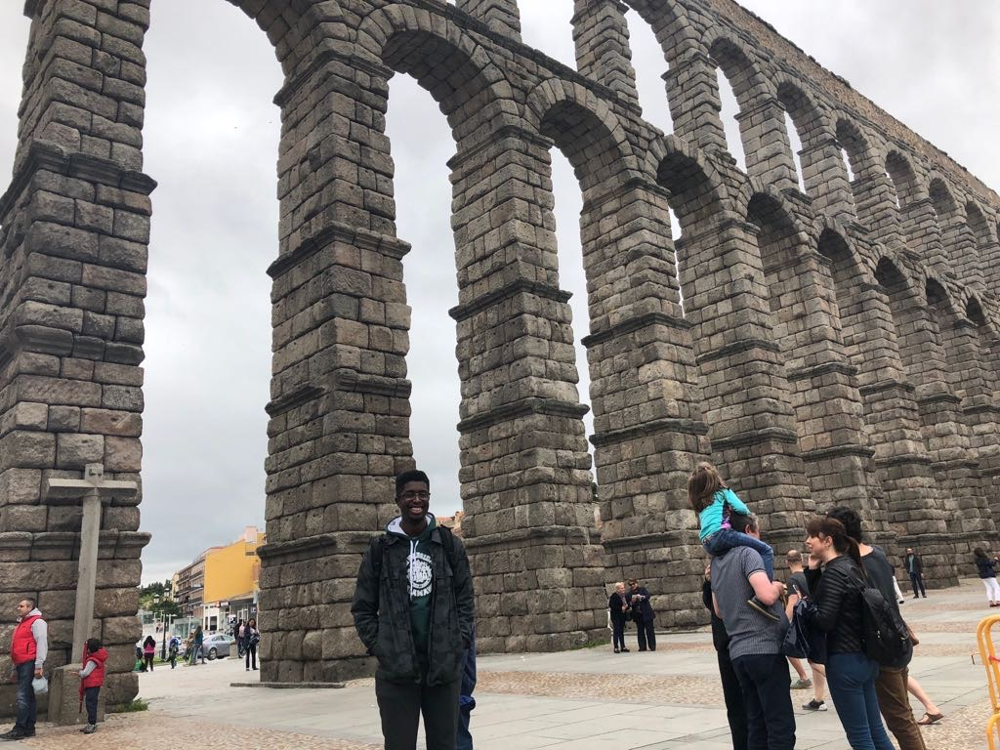
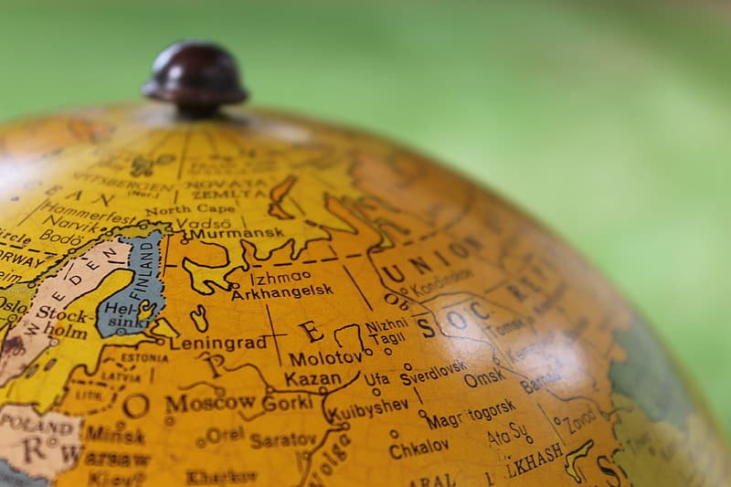

After
What I Learned
Studying abroad in Salamanca taught me so much, not only about the city and Spain, but also about myself. I learned that I want to explore the world. Getting the taste of traveling makes me want to do it more. I also want to go back and live in Europe. It’s a place I can see myself living in for the rest of my life. I learned that the best way to learn a new language is to do so by only speaking that language. I learned of new perspectives, different cultures and customs, new ways of learning.
What I'm Doing Now
Go Blue!
I am currently a student at the University of Michigan studying Information Science. I will be graduating in December of 2020. I also work in a student-led social innovation incubator and organization called optiMize. The work I do there involves helping build bridges for students transferring to the University of Michigan to make their transition as smooth and seamless as possible. Reaching out to students at community colleges and helping run programs for transfer students once they arrive at the university.
Hopes For The Future
I hope that after graduation I’ll be able to find work in Europe. My biggest goal is to move to Europe and work as a User Experience (UX) Designer. My current dream destinations are Barcelona, Spain and Amsterdam, Netherlands. I would also like to work within the music industry if at all possible. I believe there is much to be done when it comes to UX of music sites and applications. Dealing with how to organize music and music instruments in a clear and concise way is a challenge I’m willing to face. I also want to encourage other students to study abroad, especially those from my alma mater Grand Rapids Community College. Studying abroad opened my eyes to all the opportunities I could have and widened my perspective on life and what excites me. I want other students to get that chance.